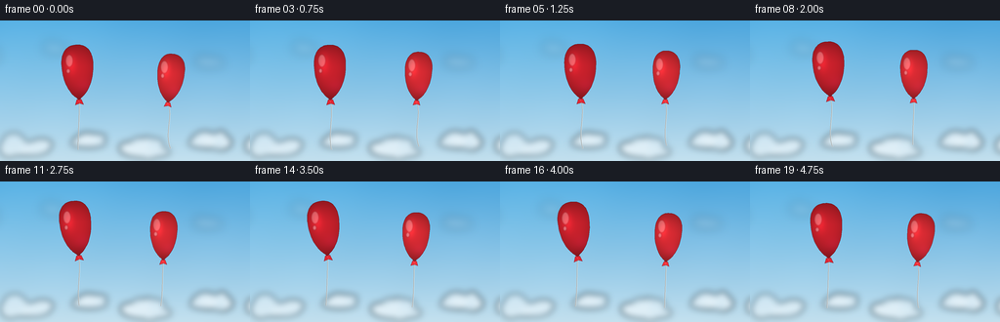
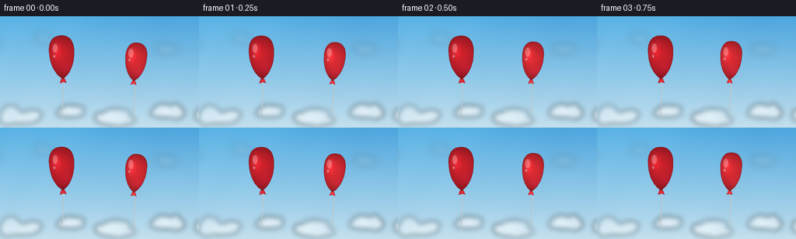

CODING AGENTS AS PIXEL WORLD MODELS
traex/GPT-5.6-Sol · instance_preservation_0036
点击播放 · 原生 RGB 像素
逐轮保存的候选
回放视频、检查图与代码变化。
每份候选均可单独播放。实际图片检查记录在下方工具轨迹中。
候选 01播放与检查图
点击播放 · 原生 RGB 像素


展开代码变化
--- 上一保存版本
+++ 本次保存版本
@@ -0,0 +1,203 @@
+from pathlib import Path
+import json, math
+import numpy as np
+from PIL import Image, ImageDraw, ImageFilter
+import artifact_io
+
+# Deterministic, fully procedural rendering of two persistent balloon instances.
+CASE_DIR = Path(__file__).resolve().parent
+SPEC = json.loads((CASE_DIR / 'task_spec.json').read_text())
+W, H = int(SPEC['width']), int(SPEC['height'])
+N, FPS = int(SPEC['frames']), float(SPEC['fps'])
+S = 4 # supersampling for clean silhouettes and strings
+SW, SH = W * S, H * S
+
+
+def cubic(p0, p1, p2, p3, n=18):
+ u = np.linspace(0.0, 1.0, n, endpoint=False)
+ a = ((1-u)**3)[:, None] * np.array(p0)
+ b = (3*((1-u)**2)*u)[:, None] * np.array(p1)
+ c = (3*(1-u)*(u**2))[:, None] * np.array(p2)
+ d = (u**3)[:, None] * np.array(p3)
+ return a+b+c+d
+
+
+def transform_points(points, cx, cy, sx, sy, angle):
+ p = np.asarray(points, np.float32).copy()
+ p[:, 0] *= sx
+ p[:, 1] *= sy
+ ca, sa = math.cos(angle), math.sin(angle)
+ x = p[:, 0]*ca - p[:, 1]*sa + cx
+ y = p[:, 0]*sa + p[:, 1]*ca + cy
+ return [(int(round(a*S)), int(round(b*S))) for a, b in zip(x, y)]
+
+
+def cloud_layer(seed, centers, drift, opacity=1.0, blur=4.0):
+ """Soft cloud bank, drawn beyond the screen edges for seamless drift."""
+ rng = np.random.default_rng(seed)
+ layer = Image.new('RGBA', (SW + 160*S, SH), (0, 0, 0, 0))
+ d = ImageDraw.Draw(layer)
+ for cx, cy, scale in centers:
+ cx = (cx + 80 + drift) * S
+ cy *= S
+ # A broad translucent base plus several softly merged lobes.
+ fill = (250, 253, 255, int(150*opacity))
+ d.ellipse((cx-30*scale*S, cy-5*scale*S, cx+31*scale*S, cy+11*scale*S), fill=fill)
+ for _ in range(7):
+ ox = rng.uniform(-21, 21)*scale*S
+ oy = rng.uniform(-8, 3)*scale*S
+ rx = rng.uniform(9, 17)*scale*S
+ ry = rng.uniform(6, 12)*scale*S
+ alpha = int(rng.uniform(120, 200)*opacity)
+ d.ellipse((cx+ox-rx, cy+oy-ry, cx+ox+rx, cy+oy+ry), fill=(255,255,255,alpha))
+ layer = layer.filter(ImageFilter.GaussianBlur(blur*S))
+ return layer.crop((80*S, 0, (80+W)*S, SH))
+
+
+def draw_bezier_line(img, points, fill, width):
+ # Catmull-Rom-like smooth path through four control points.
+ p0, p1, p2, p3 = [np.array(p, float) for p in points]
+ vals = []
+ for u in np.linspace(0, 1, 80):
+ v = 1-u
+ p = v**3*p0 + 3*v*v*u*p1 + 3*v*u*u*p2 + u**3*p3
+ vals.append((int(round(p[0]*S)), int(round(p[1]*S))))
+ ImageDraw.Draw(img).line(vals, fill=fill, width=max(1, int(width*S)), joint='curve')
+
+
+def balloon_shape():
+ # Clockwise Bezier outline; fuller at the crown, pinched at the neck.
+ segs = [
+ ((0,-1), (.52,-1.02), (.78,-.67), (.72,-.18)),
+ ((.72,-.18), (.70,.36), (.39,.78), (.10,.93)),
+ ((.10,.93), (.055,.98), (.025,1.00), (0,1.00)),
+ ((0,1.00), (-.025,1.00), (-.055,.98), (-.10,.93)),
+ ((-.10,.93), (-.39,.78), (-.70,.36), (-.72,-.18)),
+ ((-.72,-.18), (-.78,-.67), (-.52,-1.02), (0,-1)),
+ ]
+ return np.vstack([cubic(*s, n=18) for s in segs])
+
+BODY_OUTLINE = balloon_shape()
+
+
+def render_balloon(canvas, cx, cy, rx, ry, angle, palette, sway, string_len, string_color):
+ """Draw string, shaded latex envelope, specular glints, and tied neck."""
+ # Tie point follows the rotated bottom of the envelope.
+ ca, sa = math.cos(angle), math.sin(angle)
+ tie_x = cx - ry*sa
+ tie_y = cy + ry*ca
+
+ # Free string hangs with inertial side-to-side lag; it is drawn behind the knot.
+ end_x = tie_x + sway*0.55
+ end_y = min(H+4, tie_y + string_len)
+ controls = [
+ (tie_x, tie_y+2),
+ (tie_x + sway*0.72 + 2.0, tie_y + string_len*.30),
+ (tie_x - sway*0.40 - 2.0, tie_y + string_len*.68),
+ (end_x, end_y),
+ ]
+ # faint bright edge gives the thin string definition at small resolution
+ draw_bezier_line(canvas, controls, (230,236,236,135), 1.05)
+ draw_bezier_line(canvas, controls, string_color, 0.48)
+
+ mask = Image.new('L', (SW, SH), 0)
+ outline = transform_points(BODY_OUTLINE, cx, cy, rx, ry, angle)
+ ImageDraw.Draw(mask).polygon(outline, fill=255)
+ m = np.asarray(mask, np.float32) / 255.0
+
+ yy, xx = np.mgrid[0:SH, 0:SW].astype(np.float32)
+ dx = xx/S - cx
+ dy = yy/S - cy
+ # Inverse rotation to balloon-local normalized coordinates.
+ lx = (dx*ca + dy*sa) / rx
+ ly = (-dx*sa + dy*ca) / ry
+ edge = np.clip(1.0 - (lx*lx*.68 + (ly*.86)**2), 0, 1)
+ light = np.exp(-(((lx+.30)/.28)**2 + ((ly+.33)/.42)**2)*1.3)
+ bounce = np.exp(-(((lx-.32)/.55)**2 + ((ly-.53)/.34)**2)*1.6)
+ # Deep saturated edge with a broad, soft sky reflection.
+ shade = .54 + .35*edge + .22*light + .065*bounce - .07*np.clip(ly, -.2, 1)
+ base = np.array(palette, np.float32)
+ rgb = base[None,None,:] * shade[:,:,None]
+ # Subtle cool reflected light on the far lower edge.
+ rgb[:,:,2] += 7*bounce
+ rgba = np.dstack([np.clip(rgb,0,255), m*255]).astype(np.uint8)
+ canvas.alpha_composite(Image.fromarray(rgba, 'RGBA'))
+
+ # Glosses are clipped by the body mask, for a polished latex surface.
+ gloss = Image.new('RGBA', (SW,SH), (0,0,0,0))
+ gd = ImageDraw.Draw(gloss)
+ def tp(x, y):
+ X = cx + x*rx*ca - y*ry*sa
+ Y = cy + x*rx*sa + y*ry*ca
+ return X*S, Y*S
+ gx, gy = tp(-.31, -.36)
+ gd.ellipse((gx-4.8*S, gy-8.2*S, gx+2.6*S, gy+4.5*S), fill=(255,241,236,74))
+ gx2, gy2 = tp(-.43, -.06)
+ gd.ellipse((gx2-1.7*S, gy2-2.3*S, gx2+1.7*S, gy2+2.3*S), fill=(255,255,255,92))
+ gloss.putalpha(Image.fromarray(np.minimum(np.asarray(gloss.getchannel('A')), np.asarray(mask)).astype(np.uint8)))
+ gloss = gloss.filter(ImageFilter.GaussianBlur(.55*S))
+ canvas.alpha_composite(gloss)
+
+ # A narrow dark rim improves volume without creating another object.
+ od = ImageDraw.Draw(canvas)
+ od.line(outline + [outline[0]], fill=(87,13,23,120), width=max(1,int(.38*S)), joint='curve')
+
+ # Folded red latex knot, attached exactly at the neck.
+ knot_local = [(-.105,.99), (.11,.99), (.20,1.18), (0.02,1.13), (-.19,1.18)]
+ knot_pts = transform_points(knot_local, cx, cy, rx, ry, angle)
+ od.polygon(knot_pts, fill=tuple(palette)+(255,))
+ od.line(knot_pts+[knot_pts[0]], fill=(102,15,25,210), width=max(1,int(.35*S)))
+ # tiny crease on knot
+ k1 = tp(-.02, 1.02); k2 = tp(.025, 1.12)
+ od.line([(int(k1[0]),int(k1[1])),(int(k2[0]),int(k2[1]))], fill=(255,115,118,130), width=max(1,int(.35*S)))
+
+
+def make_frame(i):
+ t = i / FPS
+ # Sky gradient with a bright upper-left glow and fine, stable atmospheric texture.
+ y, x = np.mgrid[0:SH, 0:SW].astype(np.float32)
+ yn, xn = y/(SH-1), x/(SW-1)
+ top = np.array([76,166,222], np.float32)
+ bottom = np.array([195,224,238], np.float32)
+ sky = top[None,None,:]*(1-yn[:,:,None]) + bottom[None,None,:]*yn[:,:,None]
+ glow = np.exp(-(((xn-.12)/.45)**2 + ((yn-.04)/.50)**2))*16
+ sky += glow[:,:,None]*np.array([.75,.70,.42])[None,None,:]
+ texture = (np.sin(x*.021 + y*.008) + np.sin(x*.006-y*.015))*0.55
+ sky += texture[:,:,None]
+ frame = Image.fromarray(np.clip(sky,0,255).astype(np.uint8), 'RGB').convert('RGBA')
+
+ # Slow cloud drift gives air motion while leaving balloon identity unambiguous.
+ far = cloud_layer(11, [(-18,38,.55),(58,29,.42),(215,43,.48),(286,27,.54)], drift=-t*.65, opacity=.30, blur=5.2)
+ frame.alpha_composite(far)
+ horizon = cloud_layer(27, [(-28,126,.72),(26,130,.80),(90,124,.60),(149,132,.82),(213,124,.68),(274,129,.77)], drift=t*.42, opacity=.78, blur=3.4)
+ frame.alpha_composite(horizon)
+
+ # Persistent instance A: larger ruby-red balloon on the left.
+ phase1 = 2*math.pi*t/5.0
+ x1 = 79.0 + 3.2*math.sin(phase1+.15)
+ y1 = 51.5 + 2.1*math.sin(phase1*1.05+.8) - .55*t
+ a1 = math.radians(-4.0 + 3.2*math.sin(phase1+.35))
+ render_balloon(frame, x1,y1, 22.2,28.2,a1, (225,37,49),
+ 4.3*math.sin(phase1-.5), 51, (69,79,84,205))
+
+ # Persistent instance B: slightly narrower scarlet balloon on the right.
+ phase2 = 2*math.pi*t/5.6 + 2.0
+ x2 = 171.0 + 3.8*math.sin(phase2)
+ y2 = 58.0 + 1.9*math.sin(phase2+.55) - .48*t
+ a2 = math.radians(3.5 + 3.0*math.sin(phase2+.25))
+ render_balloon(frame, x2,y2, 19.0,25.0,a2, (242,48,57),
+ 4.8*math.sin(phase2-.75), 47, (76,82,84,200))
+
+ # Downsample once for antialiased 256x144 RGB output.
+ return np.asarray(frame.convert('RGB').resize((W,H), Image.Resampling.LANCZOS), dtype=np.uint8)
+
+
+def main():
+ frames = np.stack([make_frame(i) for i in range(N)], axis=0)
+ assert frames.shape == (N,H,W,3) and frames.dtype == np.uint8
+ artifact_io.save(frames, CASE_DIR)
+ print(f'Saved {N} RGB frames at {W}x{H}, {FPS:g} fps')
+
+
+if __name__ == '__main__':
+ main()
可观测工具轨迹
实际执行的命令与返回图片。
命令 1exit 0
/bin/bash -lc "cat prompt.txt && printf '\\n--- GENERATION_RULES ---\\n' && cat GENERATION_RULES.md && printf '\\n--- TASK_SPEC ---\\n' && cat task_spec.json"
命令 2exit 0
/bin/bash -lc "find . -maxdepth 3 -type f -printf '%p\\n' | sort && printf '\\n--- tools ---\\n' && command -v ffmpeg || true && command -v python3 || true && python3 - <<'PY' mods=['cv2','numpy','PIL','imageio','moviepy','cairo'] for m in mods: try: mod=__import__(m); print(m,'OK',getattr(mod,'__version__','')) except Exception as e: print(m,'NO',e) PY"
命令 3exit 0
/bin/bash -lc "sed -n '1,260p' artifact_io.py && printf '\\n--- template excerpt ---\\n' && sed -n '1,160p' player_template.html"
命令 4exit 0
/bin/bash -lc "cat > generate.py <<'PY'
from pathlib import Path
import json, math
import numpy as np
from PIL import Image, ImageDraw, ImageFilter
import artifact_io
# Deterministic, fully procedural rendering of two persistent balloon instances.
CASE_DIR = Path(__file__).resolve().parent
SPEC = json.loads((CASE_DIR / 'task_spec.json').read_text())
W, H = int(SPEC['width']), int(SPEC['height'])
N, FPS = int(SPEC['frames']), float(SPEC['fps'])
S = 4 # supersampling for clean silhouettes and strings
SW, SH = W * S, H * S
def cubic(p0, p1, p2, p3, n=18):
u = np.linspace(0.0, 1.0, n, endpoint=False)
a = ((1-u)**3)[:, None] * np.array(p0)
b = (3*((1-u)**2)*u)[:, None] * np.array(p1)
c = (3*(1-u)*(u**2))[:, None] * np.array(p2)
d = (u**3)[:, None] * np.array(p3)
return a+b+c+d
def transform_points(points, cx, cy, sx, sy, angle):
p = np.asarray(points, np.float32).copy()
p[:, 0] *= sx
p[:, 1] *= sy
ca, sa = math.cos(angle), math.sin(angle)
x = p[:, 0]*ca - p[:, 1]*sa + cx
y = p[:, 0]*sa + p[:, 1]*ca + cy
return [(int(round(a*S)), int(round(b*S))) for a, b in zip(x, y)]
def cloud_layer(seed, centers, drift, opacity=1.0, blur=4.0):
\"\"\"Soft cloud bank, drawn beyond the screen edges for seamless drift.\"\"\"
rng = np.random.default_rng(seed)
layer = Image.new('RGBA', (SW + 160*S, SH), (0, 0, 0, 0))
d = ImageDraw.Draw(layer)
for cx, cy, scale in centers:
cx = (cx + 80 + drift) * S
cy *= S
# A broad translucent base plus several softly merged lobes.
fill = (250, 253, 255, int(150*opacity))
d.ellipse((cx-30*scale*S, cy-5*scale*S, cx+31*scale*S, cy+11*scale*S), fill=fill)
for _ in range(7):
ox = rng.uniform(-21, 21)*scale*S
oy = rng.uniform(-8, 3)*scale*S
rx = rng.uniform(9, 17)*scale*S
ry = rng.uniform(6, 12)*scale*S
alpha = int(rng.uniform(120, 200)*opacity)
d.ellipse((cx+ox-rx, cy+oy-ry, cx+ox+rx, cy+oy+ry), fill=(255,255,255,alpha))
layer = layer.filter(ImageFilter.GaussianBlur(blur*S))
return layer.crop((80*S, 0, (80+W)*S, SH))
def draw_bezier_line(img, points, fill, width):
# Catmull-Rom-like smooth path through four control points.
p0, p1, p2, p3 = [np.array(p, float) for p in points]
vals = []
for u in np.linspace(0, 1, 80):
v = 1-u
p = v**3*p0 + 3*v*v*u*p1 + 3*v*u*u*p2 + u**3*p3
vals.append((int(round(p[0]*S)), int(round(p[1]*S))))
ImageDraw.Draw(img).line(vals, fill=fill, width=max(1, int(width*S)), joint='curve')
def balloon_shape():
# Clockwise Bezier outline; fuller at the crown, pinched at the neck.
segs = [
((0,-1), (.52,-1.02), (.78,-.67), (.72,-.18)),
((.72,-.18), (.70,.36), (.39,.78), (.10,.93)),
((.10,.93), (.055,.98), (.025,1.00), (0,1.00)),
((0,1.00), (-.025,1.00), (-.055,.98), (-.10,.93)),
((-.10,.93), (-.39,.78), (-.70,.36), (-.72,-.18)),
((-.72,-.18), (-.78,-.67), (-.52,-1.02), (0,-1)),
]
return np.vstack([cubic(*s, n=18) for s in segs])
BODY_OUTLINE = balloon_shape()
def render_balloon(canvas, cx, cy, rx, ry, angle, palette, sway, string_len, string_color):
\"\"\"Draw string, shaded latex envelope, specular glints, and tied neck.\"\"\"
# Tie point follows the rotated bottom of the envelope.
ca, sa = math.cos(angle), math.sin(angle)
tie_x = cx - ry*sa
tie_y = cy + ry*ca
# Free string hangs with inertial side-to-side lag; it is drawn behind the knot.
end_x = tie_x + sway*0.55
end_y = min(H+4, tie_y + string_len)
controls = [
(tie_x, tie_y+2),
(tie_x + sway*0.72 + 2.0, tie_y + string_len*.30),
(tie_x - sway*0.40 - 2.0, tie_y + string_len*.68),
(end_x, end_y),
]
# faint bright edge gives the thin string definition at small resolution
draw_bezier_line(canvas, controls, (230,236,236,135), 1.05)
draw_bezier_line(canvas, controls, string_color, 0.48)
mask = Image.new('L', (SW, SH), 0)
outline = transform_points(BODY_OUTLINE, cx, cy, rx, ry, angle)
ImageDraw.Draw(mask).polygon(outline, fill=255)
m = np.asarray(mask, np.float32) / 255.0
yy, xx = np.mgrid[0:SH, 0:SW].astype(np.float32)
dx = xx/S - cx
dy = yy/S - cy
# Inverse rotation to balloon-local normalized coordinates.
lx = (dx*ca + dy*sa) / rx
ly = (-dx*sa + dy*ca) / ry
edge = np.clip(1.0 - (lx*lx*.68 + (ly*.86)**2), 0, 1)
light = np.exp(-(((lx+.30)/.28)**2 + ((ly+.33)/.42)**2)*1.3)
bounce = np.exp(-(((lx-.32)/.55)**2 + ((ly-.53)/.34)**2)*1.6)
# Deep saturated edge with a broad, soft sky reflection.
shade = .54 + .35*edge + .22*light + .065*bounce - .07*np.clip(ly, -.2, 1)
base = np.array(palette, np.float32)
rgb = base[None,None,:] * shade[:,:,None]
# Subtle cool reflected light on the far lower edge.
rgb[:,:,2] += 7*bounce
rgba = np.dstack([np.clip(rgb,0,255), m*255]).astype(np.uint8)
canvas.alpha_composite(Image.fromarray(rgba, 'RGBA'))
# Glosses are clipped by the body mask, for a polished latex surface.
gloss = Image.new('RGBA', (SW,SH), (0,0,0,0))
gd = ImageDraw.Draw(gloss)
def tp(x, y):
X = cx + x*rx*ca - y*ry*sa
Y = cy + x*rx*sa + y*ry*ca
return X*S, Y*S
gx, gy = tp(-.31, -.36)
gd.ellipse((gx-4.8*S, gy-8.2*S, gx+2.6*S, gy+4.5*S), fill=(255,241,236,74))
gx2, gy2 = tp(-.43, -.06)
gd.ellipse((gx2-1.7*S, gy2-2.3*S, gx2+1.7*S, gy2+2.3*S), fill=(255,255,255,92))
gloss.putalpha(Image.fromarray(np.minimum(np.asarray(gloss.getchannel('A')), np.asarray(mask)).astype(np.uint8)))
gloss = gloss.filter(ImageFilter.GaussianBlur(.55*S))
canvas.alpha_composite(gloss)
# A narrow dark rim improves volume without creating another object.
od = ImageDraw.Draw(canvas)
od.line(outline + [outline[0]], fill=(87,13,23,120), width=max(1,int(.38*S)), joint='curve')
# Folded red latex knot, attached exactly at the neck.
knot_local = [(-.105,.99), (.11,.99), (.20,1.18), (0.02,1.13), (-.19,1.18)]
knot_pts = transform_points(knot_local, cx, cy, rx, ry, angle)
od.polygon(knot_pts, fill=tuple(palette)+(255,))
od.line(knot_pts+[knot_pts[0]], fill=(102,15,25,210), width=max(1,int(.35*S)))
# tiny crease on knot
k1 = tp(-.02, 1.02); k2 = tp(.025, 1.12)
od.line([(int(k1[0]),int(k1[1])),(int(k2[0]),int(k2[1]))], fill=(255,115,118,130), width=max(1,int(.35*S)))
def make_frame(i):
t = i / FPS
# Sky gradient with a bright upper-left glow and fine, stable atmospheric texture.
y, x = np.mgrid[0:SH, 0:SW].astype(np.float32)
yn, xn = y/(SH-1), x/(SW-1)
top = np.array([76,166,222], np.float32)
bottom = np.array([195,224,238], np.float32)
sky = top[None,None,:]*(1-yn[:,:,None]) + bottom[None,None,:]*yn[:,:,None]
glow = np.exp(-(((xn-.12)/.45)**2 + ((yn-.04)/.50)**2))*16
sky += glow[:,:,None]*np.array([.75,.70,.42])[None,None,:]
texture = (np.sin(x*.021 + y*.008) + np.sin(x*.006-y*.015))*0.55
sky += texture[:,:,None]
frame = Image.fromarray(np.clip(sky,0,255).astype(np.uint8), 'RGB').convert('RGBA')
# Slow cloud drift gives air motion while leaving balloon identity unambiguous.
far = cloud_layer(11, [(-18,38,.55),(58,29,.42),(215,43,.48),(286,27,.54)], drift=-t*.65, opacity=.30, blur=5.2)
frame.alpha_composite(far)
horizon = cloud_layer(27, [(-28,126,.72),(26,130,.80),(90,124,.60),(149,132,.82),(213,124,.68),(274,129,.77)], drift=t*.42, opacity=.78, blur=3.4)
frame.alpha_composite(horizon)
# Persistent instance A: larger ruby-red balloon on the left.
phase1 = 2*math.pi*t/5.0
x1 = 79.0 + 3.2*math.sin(phase1+.15)
y1 = 51.5 + 2.1*math.sin(phase1*1.05+.8) - .55*t
a1 = math.radians(-4.0 + 3.2*math.sin(phase1+.35))
render_balloon(frame, x1,y1, 22.2,28.2,a1, (225,37,49),
4.3*math.sin(phase1-.5), 51, (69,79,84,205))
# Persistent instance B: slightly narrower scarlet balloon on the right.
phase2 = 2*math.pi*t/5.6 + 2.0
x2 = 171.0 + 3.8*math.sin(phase2)
y2 = 58.0 + 1.9*math.sin(phase2+.55) - .48*t
a2 = math.radians(3.5 + 3.0*math.sin(phase2+.25))
render_balloon(frame, x2,y2, 19.0,25.0,a2, (242,48,57),
4.8*math.sin(phase2-.75), 47, (76,82,84,200))
# Downsample once for antialiased 256x144 RGB output.
return np.asarray(frame.convert('RGB').resize((W,H), Image.Resampling.LANCZOS), dtype=np.uint8)
def main():
frames = np.stack([make_frame(i) for i in range(N)], axis=0)
assert frames.shape == (N,H,W,3) and frames.dtype == np.uint8
artifact_io.save(frames, CASE_DIR)
print(f'Saved {N} RGB frames at {W}x{H}, {FPS:g} fps')
if __name__ == '__main__':
main()
PY
python3 generate.py
ls -lh pixels.npz inspection.png transition_check.png index.html frames/00.png frames/19.png"命令 5exit 0
/bin/bash -lc "python3 - <<'PY'
import cv2, numpy as np, glob
fs=[]
for f in sorted(glob.glob('frames/*.png')):
im=cv2.imread(f); fs.append(im)
hsv=cv2.cvtColor(im,cv2.COLOR_BGR2HSV)
# broad red latex mask, excluding very dim rim/string
m=((hsv[:,:,0]<8)|(hsv[:,:,0]>174))&(hsv[:,:,1]>125)&(hsv[:,:,2]>80)
n,lab,stats,cents=cv2.connectedComponentsWithStats(m.astype(np.uint8),8)
comps=sorted([(int(stats[j,4]),tuple(np.round(cents[j],2))) for j in range(1,n) if stats[j,4]>100],reverse=True)
print(f.split('/')[-1], comps)
a=np.stack(fs).astype(float)
d=np.mean(np.abs(np.diff(a,axis=0)),axis=(1,2,3))
print('frame MAE transitions:',np.round(d,3).tolist())
print('min/max transition MAE',d.min(),d.max(),'ratio',d.max()/d.min())
print('RGB ranges',a.min(axis=(0,1,2)),a.max(axis=(0,1,2)))
PY"命令 6exit 0
/bin/bash -lc "python3 - <<'PY'
import json, numpy as np
from pathlib import Path
s=json.loads(Path('task_spec.json').read_text())
z=np.load('pixels.npz')['pixels']
print('pixels tensor',z.shape,z.dtype)
assert z.shape==(s['height'],s['width'],s['frames'])
for i,p in enumerate(sorted(Path('frames').glob('*.png'))):
from PIL import Image
a=np.asarray(Image.open(p))
assert a.shape==(s['height'],s['width'],3) and a.dtype==np.uint8
packed=(a[:,:,0].astype(np.uint32)<<16)|(a[:,:,1].astype(np.uint32)<<8)|a[:,:,2].astype(np.uint32)
assert np.array_equal(packed,z[:,:,i])
print('all 20 frame files agree bit-for-bit with pixels.npz')
print('required artifacts',[(p,Path(p).stat().st_size) for p in ['generate.py','pixels.npz','index.html','inspection.png','transition_check.png']])
PY"命令 7exit 0
/bin/bash -lc 'git status --short 2>/dev/null || true; sha256sum generate.py pixels.npz index.html'
保存候选 1 份；完成命令 7 次；可验证图片返回 0 张。原始 API 响应与完整日志保留在本地。